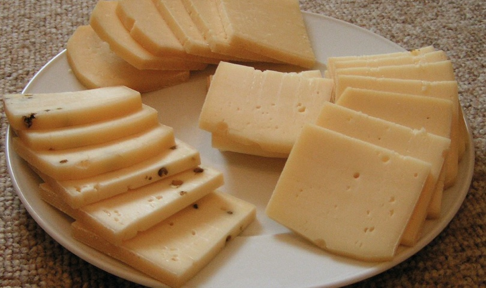
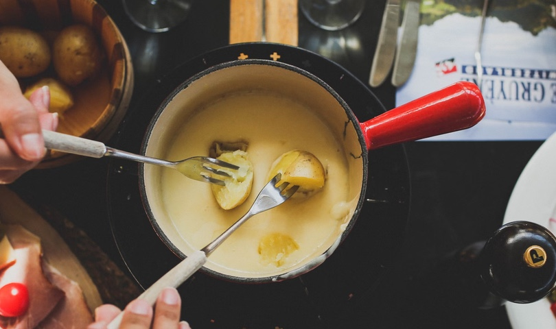
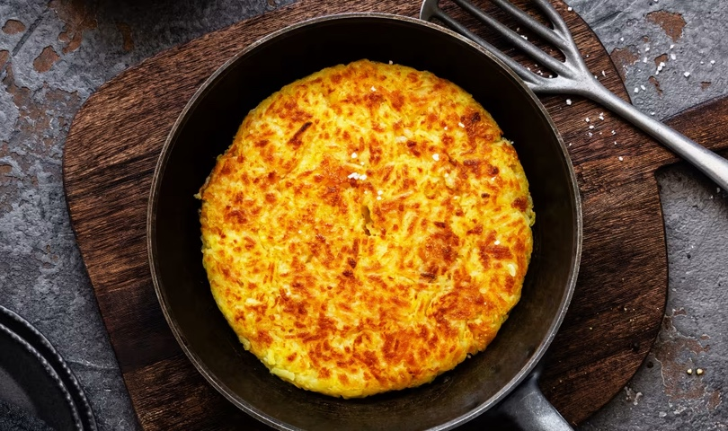

Bienvenue dans notre havre de paix, où la tradition culinaire suisse s'épanouit. Savourez nos plats de fondue et
raclette, tout en profitant d'événements musicaux authentiques.

raclette traditionelle
Un grand classique des montagnes
! Notre raclette est servie avec
des pommes de terre en robe des
champs, des cornichons et des
oignons au vinaigre. Le fromage,
affiné en alpage, est fondu
lentement pour libérer tous
ses arômes et versé généreusement
dans votre assiette.

raclette traditionelle
L’incontournable fondue, préparée selon la
recette authentique suisse avec un mélange
de Gruyère et de Vacherin Fribourgeois.
Servie avec du pain de campagne croustillant,
elle se déguste en bonne compagnie dans une
ambiance chaleureuse. Un vrai plaisir à partager !

raclette traditionelle
Ce plat rustique et réconfortant est préparé à base
de pommes de terre râpées et dorées à la perfection.
Nous l’agrémentons de lard fumé, de fromage fondu ou
encore d’un œuf au plat, pour une touche encore plus gourmande.